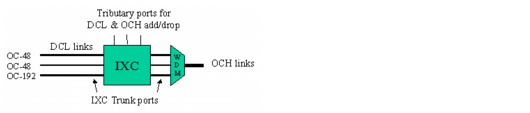
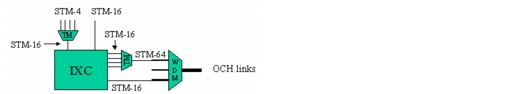
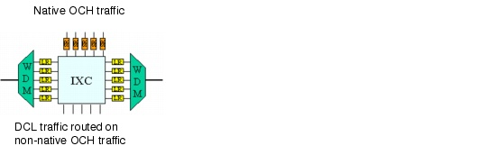
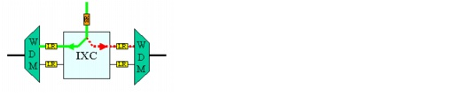

Concepts and Models > Node Modeling Capabilities in SP Guru Transport Planner > Integrated SONET/Optical Nodes: IXC
Integrated SONET/Optical Nodes: IXC
A different node type can be considered for EOCC nodes. The Integrated optical-digital Cross-Connect (IXC) consolidates the functions of the DXC and the OXC in one device; this eliminates the need for intermediate ports.
The IXC consists of an electrical switching matrix that can
- switch SONET traffic down to the STS-1 level (STM-1 level for SDH traffic) for grooming purposes (between DCL links)
- add/drop local SONET traffic via the IXC tributary ports
- switch an entire wavelength between different WDM line systems
- add/drop local native OCH traffic from a WDM line system via an IXC tributary port
The IXC tributary ports add or drop SONET local traffic and native OCH local traffic. The trunk ports of the IXC terminate the physical DCL trunks (to an ECC node) and wavelengths of the WDM line systems of the OCH links (to EOCC or OCC nodes).
Figure 2-30 IXC in EOCC Node

Minimum and Maximum Bit Rates for Tributary and Trunk Ports
You specify an IXC by the number of equivalent STS-3/STM-1 ports. You can also limit the bit rates allowed for the IXC ports, and specify a minimum tributary port bit rate and a maximum trunk port bit rate. In these respects, IXCs resemble DXCs; for more information about minimum and maximum bit rates for DXCs, see SONET Nodes: DXC.
The following figure shows an IXC with minimum and maximum bit rates equal to STM-16.
Figure 2-31 IXC with Minimum Tributary and Maximum Trunk Bit Rate of STM-16

Native Traffic
In an IXC scenario, native connections that terminate in that node consume a tributary and a trunk port. Non-native OCH connections that are trailed to the DCL layer use a trunk port only (the SONET traffic routed over these trunks uses tributary ports at the IXC when added or dropped at this node).
Figure 2-32 Native OCH Traffic on an IXC

Protection Options
For non-client protected native OCH traffic through an IXC, the situation is slightly different from an OXC. In this case, the IXC is an electrical switch that can do protection switching for OCH and DCL traffic. Only one tributary port is required at the IXC and protection switching happens in the IXC. For client-protected native OCH traffic, the situation is similar to an OXC (that is, two tributary ports are needed on the IXC).
For DCL traffic, the situation is similar to a DXC: two tributary ports are required on the IXC for client-protected traffic; if the traffic is not client-protected, one tributary port is adequate and the protection switching is done internally in the DXC.
Figure 2-33 Non-Client Protected OCH Traffic in IXC

ADMs and IXC
ADMs in combination with an IXC are not explicitly counted. In this case, the ADM functionality is realized by the IXC, which acts as an MSSP (multi-service switching platform).
| Home © 1987-2007 OPNET Technologies, Inc. All Rights Reserved. This software may be covered by one or more U.S. Patents. See complete patent notice in the Legal Notices section. OPNET Support Center |